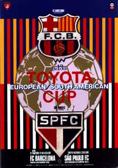
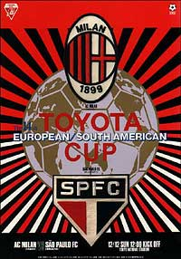
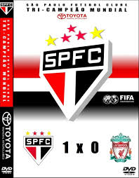

-
1 Mundial
Para mais informaçoes clique na imagem abaixo
Contra o Barcelola em
1992
-
2 Mundial
Para mais informaçoes clique na imagem abaixo
Contra o Milan em
1993
-
3 Mundial
Para mais informaçoes clique na imagem abaixo
Contra o Liverpool em
2005